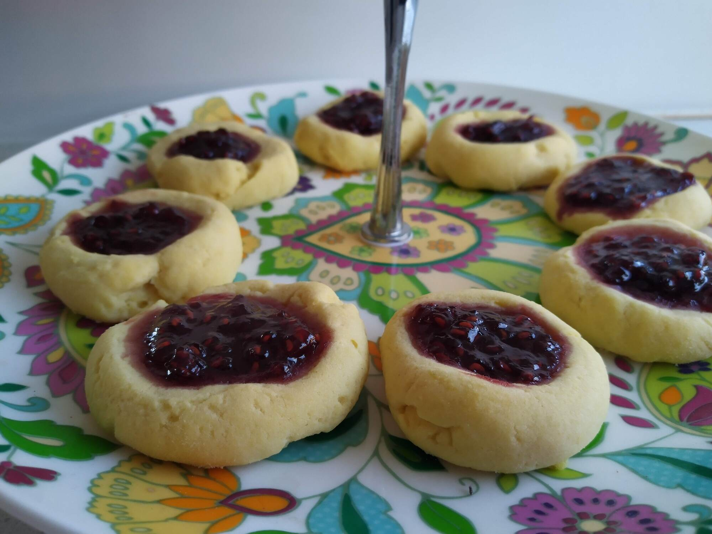

Raspberry Jam drops

Preheat oven to 180 degrees and line a baking tray with paper
- 175g margarine, softened
- 1 tsp vanilla extract
- 1/4 icing sugar, sifted
Beat margarine, vanilla and icing sugar until fluffy
- 1 cup plain flour, sifted
- 1/4 cup cornflour
Add flour and cornflour and mix until dough forms
With lightly floured hands roll 1 tbsp size dough and place on baking tray
Make an indent in the dough with your finger
- raspberry jam
Spoon raspberry jam into hole
Bake for 10 mins